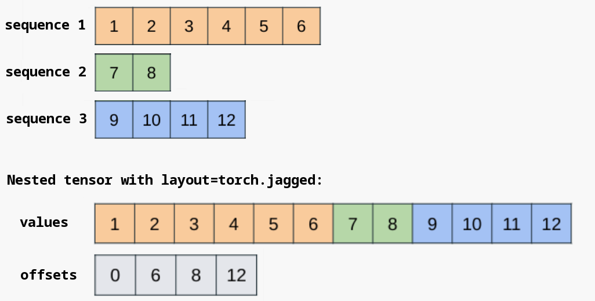

torch.nested¶
Introduction¶
Warning
The PyTorch API of nested tensors is in prototype stage and will change in the near future.
Nested tensors allow for ragged-shaped data to be contained within and operated upon as a single tensor. Such data is stored underneath in an efficient packed representation, while exposing a standard PyTorch tensor interface for applying operations.
A common application of nested tensors is for expressing batches of variable-length sequential data present in various domains, such as varying sentence lengths, image sizes, and audio / video clip lengths. Traditionally, such data has been handled by padding sequences to that of the max length within a batch, performing computation on the padded form, and subsequently masking to remove padding. This is inefficient and error-prone, and nested tensors exist to address these problems.
The API for calling operations on a nested tensor is no different from that of a regular
torch.Tensor, allowing for seamless integration with existing models, with the main
difference being construction of the inputs.
As this is a prototype feature, the set of operations supported is limited, but growing. We welcome issues, feature requests, and contributions. More information on contributing can be found in this Readme.
Construction¶
Note
There are two forms of nested tensors present within PyTorch, distinguished by layout as
specified during construction. Layout can be one of torch.strided or torch.jagged.
We recommend utilizing the torch.jagged layout whenever possible. While it currently only
supports a single ragged dimension, it has better op coverage, receives active development, and
integrates well with torch.compile. These docs adhere to this recommendation and refer to
nested tensors with the torch.jagged layout as “NJTs” for brevity throughout.
Construction is straightforward and involves passing a list of tensors to the
torch.nested.nested_tensor constructor. A nested tensor with the torch.jagged layout
(AKA an “NJT”) supports a single ragged dimension. This constructor will copy the input tensors
into a packed, contiguous block of memory according to the layout described in the data_layout
section below.
>>> a, b = torch.arange(3), torch.arange(5) + 3
>>> a
tensor([0, 1, 2])
>>> b
tensor([3, 4, 5, 6, 7])
>>> nt = torch.nested.nested_tensor([a, b], layout=torch.jagged)
>>> print([component for component in nt])
[tensor([0, 1, 2]), tensor([3, 4, 5, 6, 7])]
Each tensor in the list must have the same number of dimensions, but the shapes can otherwise vary along a single dimension. If the dimensionalities of the input components don’t match, the constructor throws an error.
>>> a = torch.randn(50, 128) # 2D tensor
>>> b = torch.randn(2, 50, 128) # 3D tensor
>>> nt = torch.nested.nested_tensor([a, b], layout=torch.jagged)
...
RuntimeError: When constructing a nested tensor, all tensors in list must have the same dim
During construction, dtype, device, and whether gradients are required can be chosen via the usual keyword arguments.
>>> nt = torch.nested.nested_tensor([a, b], layout=torch.jagged, dtype=torch.float32, device="cuda", requires_grad=True)
>>> print([component for component in nt])
[tensor([0., 1., 2.], device='cuda:0',
grad_fn=<UnbindBackwardAutogradNestedTensor0>), tensor([3., 4., 5., 6., 7.], device='cuda:0',
grad_fn=<UnbindBackwardAutogradNestedTensor0>)]
torch.nested.as_nested_tensor can be used to preserve autograd history from the tensors passed
to the constructor. When this constructor is utilized, gradients will flow through the nested tensor
back into the original components. Note that this constructor still copies the input components into
a packed, contiguous block of memory.
>>> a = torch.randn(12, 512, requires_grad=True)
>>> b = torch.randn(23, 512, requires_grad=True)
>>> nt = torch.nested.as_nested_tensor([a, b], layout=torch.jagged, dtype=torch.float32)
>>> nt.sum().backward()
>>> a.grad
tensor([[1., 1., 1., ..., 1., 1., 1.],
[1., 1., 1., ..., 1., 1., 1.],
[1., 1., 1., ..., 1., 1., 1.],
...,
[1., 1., 1., ..., 1., 1., 1.],
[1., 1., 1., ..., 1., 1., 1.],
[1., 1., 1., ..., 1., 1., 1.]])
>>> b.grad
tensor([[1., 1., 1., ..., 1., 1., 1.],
[1., 1., 1., ..., 1., 1., 1.],
[1., 1., 1., ..., 1., 1., 1.],
...,
[1., 1., 1., ..., 1., 1., 1.],
[1., 1., 1., ..., 1., 1., 1.],
[1., 1., 1., ..., 1., 1., 1.]])
The above functions all create contiguous NJTs, where a chunk of memory is allocated to store a packed form of the underlying components (see the data_layout section below for more details).
It is also possible to create a non-contiguous NJT view over a pre-existing dense tensor
with padding, avoiding the memory allocation and copying. torch.nested.narrow() is the tool
for accomplishing this.
>>> padded = torch.randn(3, 5, 4)
>>> seq_lens = torch.tensor([3, 2, 5], dtype=torch.int64)
>>> nt = torch.nested.narrow(padded, dim=1, start=0, length=seq_lens, layout=torch.jagged)
>>> nt.shape
torch.Size([3, j1, 4])
>>> nt.is_contiguous()
False
Note that the nested tensor acts as a view over the original padded dense tensor, referencing the
same memory without copying / allocation. Operation support for non-contiguous NJTs is somewhat more
limited, so if you run into support gaps, it’s always possible to convert to a contiguous NJT
using contiguous().
Data Layout and Shape¶
For efficiency, nested tensors generally pack their tensor components into a contiguous chunk of
memory and maintain additional metadata to specify batch item boundaries. For the torch.jagged
layout, the contiguous chunk of memory is stored in the values component, with the offsets
component delineating batch item boundaries for the ragged dimension.

It’s possible to directly access the underlying NJT components when necessary.
>>> a = torch.randn(50, 128) # text 1
>>> b = torch.randn(32, 128) # text 2
>>> nt = torch.nested.nested_tensor([a, b], layout=torch.jagged, dtype=torch.float32)
>>> nt.values().shape # note the "packing" of the ragged dimension; no padding needed
torch.Size([82, 128])
>>> nt.offsets()
tensor([ 0, 50, 82])
It can also be useful to construct an NJT from the jagged values and offsets
constituents directly; the torch.nested.nested_tensor_from_jagged() constructor serves
this purpose.
>>> values = torch.randn(82, 128)
>>> offsets = torch.tensor([0, 50, 82], dtype=torch.int64)
>>> nt = torch.nested.nested_tensor_from_jagged(values=values, offsets=offsets)
An NJT has a well-defined shape with dimensionality 1 greater than that of its components. The
underlying structure of the ragged dimension is represented by a symbolic value (j1 in the
example below).
>>> a = torch.randn(50, 128)
>>> b = torch.randn(32, 128)
>>> nt = torch.nested.nested_tensor([a, b], layout=torch.jagged, dtype=torch.float32)
>>> nt.dim()
3
>>> nt.shape
torch.Size([2, j1, 128])
NJTs must have the same ragged structure to be compatible with each other. For example, to run a
binary operation involving two NJTs, the ragged structures must match (i.e. they must have the
same ragged shape symbol in their shapes). In the details, each symbol corresponds with an exact
offsets tensor, so both NJTs must have the same offsets tensor to be compatible with
each other.
>>> a = torch.randn(50, 128)
>>> b = torch.randn(32, 128)
>>> nt1 = torch.nested.nested_tensor([a, b], layout=torch.jagged, dtype=torch.float32)
>>> nt2 = torch.nested.nested_tensor([a, b], layout=torch.jagged, dtype=torch.float32)
>>> nt1.offsets() is nt2.offsets()
False
>>> nt3 = nt1 + nt2
RuntimeError: cannot call binary pointwise function add.Tensor with inputs of shapes (2, j2, 128) and (2, j3, 128)
In the above example, even though the conceptual shapes of the two NJTs are the same, they don’t
share a reference to the same offsets tensor, so their shapes differ, and they are not
compatible. We recognize that this behavior is unintuitive and are working hard to relax this
restriction for the beta release of nested tensors. For a workaround, see the
Troubleshooting section of this document.
In addition to the offsets metadata, NJTs can also compute and cache the minimum and maximum
sequence lengths for its components, which can be useful for invoking particular kernels (e.g. SDPA).
There are currently no public APIs for accessing these, but this will change for the beta release.
Supported Operations¶
This section contains a list of common operations over nested tensors that you may find useful. It is not comprehensive, as there are on the order of a couple thousand ops within PyTorch. While a sizeable subset of these are supported for nested tensors today, full support is a large task. The ideal state for nested tensors is full support of all PyTorch operations that are available for non-nested tensors. To help us accomplish this, please consider:
Requesting particular ops needed for your use case here to help us prioritize.
Contributing! It’s not too hard to add nested tensor support for a given PyTorch op; see the Contributions section below for details.
Viewing nested tensor constituents¶
unbind() allows you to retrieve a view of the nested tensor’s constituents.
>>> import torch
>>> a = torch.randn(2, 3)
>>> b = torch.randn(3, 3)
>>> nt = torch.nested.nested_tensor([a, b], layout=torch.jagged)
>>> nt.unbind()
(tensor([[-0.9916, -0.3363, -0.2799],
[-2.3520, -0.5896, -0.4374]]), tensor([[-2.0969, -1.0104, 1.4841],
[ 2.0952, 0.2973, 0.2516],
[ 0.9035, 1.3623, 0.2026]]))
>>> nt.unbind()[0] is not a
True
>>> nt.unbind()[0].mul_(3)
tensor([[ 3.6858, -3.7030, -4.4525],
[-2.3481, 2.0236, 0.1975]])
>>> nt.unbind()
(tensor([[-2.9747, -1.0089, -0.8396],
[-7.0561, -1.7688, -1.3122]]), tensor([[-2.0969, -1.0104, 1.4841],
[ 2.0952, 0.2973, 0.2516],
[ 0.9035, 1.3623, 0.2026]]))
Note that nt.unbind()[0] is not a copy, but rather a slice of the underlying memory, which
represents the first entry or constituent of the nested tensor.
Conversions to / from padded¶
torch.nested.to_padded_tensor() converts an NJT to a padded dense tensor with the specified
padding value. The ragged dimension will be padded out to the size of the maximum sequence length.
>>> import torch
>>> a = torch.randn(2, 3)
>>> b = torch.randn(6, 3)
>>> nt = torch.nested.nested_tensor([a, b], layout=torch.jagged)
>>> padded = torch.nested.to_padded_tensor(nt, padding=4.2)
>>> padded
tensor([[[ 1.6107, 0.5723, 0.3913],
[ 0.0700, -0.4954, 1.8663],
[ 4.2000, 4.2000, 4.2000],
[ 4.2000, 4.2000, 4.2000],
[ 4.2000, 4.2000, 4.2000],
[ 4.2000, 4.2000, 4.2000]],
[[-0.0479, -0.7610, -0.3484],
[ 1.1345, 1.0556, 0.3634],
[-1.7122, -0.5921, 0.0540],
[-0.5506, 0.7608, 2.0606],
[ 1.5658, -1.1934, 0.3041],
[ 0.1483, -1.1284, 0.6957]]])
This can be useful as an escape hatch to work around NJT support gaps, but ideally such conversions should be avoided when possible for optimal memory usage and performance, as the more efficient nested tensor layout does not materialize padding.
The reverse conversion can be accomplished using torch.nested.narrow(), which applies
ragged structure to a given dense tensor to produce an NJT. Note that by default, this operation
does not copy the underlying data, and thus the output NJT is generally non-contiguous. It may be
useful to explicitly call contiguous() here if a contiguous NJT is desired.
>>> padded = torch.randn(3, 5, 4)
>>> seq_lens = torch.tensor([3, 2, 5], dtype=torch.int64)
>>> nt = torch.nested.narrow(padded, dim=1, length=seq_lens, layout=torch.jagged)
>>> nt.shape
torch.Size([3, j1, 4])
>>> nt = nt.contiguous()
>>> nt.shape
torch.Size([3, j2, 4])
Shape manipulations¶
Nested tensors support a wide array of operations for shape manipulation, including views.
>>> a = torch.randn(2, 6)
>>> b = torch.randn(4, 6)
>>> nt = torch.nested.nested_tensor([a, b], layout=torch.jagged)
>>> nt.shape
torch.Size([2, j1, 6])
>>> nt.unsqueeze(-1).shape
torch.Size([2, j1, 6, 1])
>>> nt.unflatten(-1, [2, 3]).shape
torch.Size([2, j1, 2, 3])
>>> torch.cat([nt, nt], dim=2).shape
torch.Size([2, j1, 12])
>>> torch.stack([nt, nt], dim=2).shape
torch.Size([2, j1, 2, 6])
>>> nt.transpose(-1, -2).shape
torch.Size([2, 6, j1])
Attention mechanisms¶
As variable-length sequences are common inputs to attention mechanisms, nested tensors support important attention operators Scaled Dot Product Attention (SDPA) and FlexAttention. See here for usage examples of NJT with SDPA and here for usage examples of NJT with FlexAttention.
Usage with torch.compile¶
NJTs are designed to be used with torch.compile() for optimal performance, and we always
recommend utilizing torch.compile() with NJTs when possible. NJTs work out-of-the-box and
graph-break-free both when passed as inputs to a compiled function or module OR when
instantiated in-line within the function.
Note
If you’re not able to utilize torch.compile() for your use case, performance and memory
usage may still benefit from the use of NJTs, but it’s not as clear-cut whether this will be
the case. It is important that the tensors being operated on are large enough so the
performance gains are not outweighed by the overhead of python tensor subclasses.
>>> import torch
>>> a = torch.randn(2, 3)
>>> b = torch.randn(4, 3)
>>> nt = torch.nested.nested_tensor([a, b], layout=torch.jagged)
>>> def f(x): return x.sin() + 1
...
>>> compiled_f = torch.compile(f, fullgraph=True)
>>> output = compiled_f(nt)
>>> output.shape
torch.Size([2, j1, 3])
>>> def g(values, offsets): return torch.nested.nested_tensor_from_jagged(values, offsets) * 2.
...
>>> compiled_g = torch.compile(g, fullgraph=True)
>>> output2 = compiled_g(nt.values(), nt.offsets())
>>> output2.shape
torch.Size([2, j1, 3])
Note that NJTs support Dynamic Shapes to avoid unnecessary recompiles with changing ragged structure.
>>> a = torch.randn(2, 3)
>>> b = torch.randn(4, 3)
>>> c = torch.randn(5, 3)
>>> d = torch.randn(6, 3)
>>> nt1 = torch.nested.nested_tensor([a, b], layout=torch.jagged)
>>> nt2 = torch.nested.nested_tensor([c, d], layout=torch.jagged)
>>> def f(x): return x.sin() + 1
...
>>> compiled_f = torch.compile(f, fullgraph=True)
>>> output1 = compiled_f(nt1)
>>> output2 = compiled_f(nt2) # NB: No recompile needed even though ragged structure differs
If you run into problems or arcane errors when utilizing NJT + torch.compile, please file a
PyTorch issue. Full subclass support within torch.compile is a long-term effort and there may
be some rough edges at this time.
Troubleshooting¶
This section contains common errors that you may run into when utilizing nested tensors, alongside the reason for these errors and suggestions for how to address them.
Unimplemented ops¶
This error is becoming rarer as nested tensor op support grows, but it’s still possible to hit it today given that there are a couple thousand ops within PyTorch.
NotImplementedError: aten.view_as_real.default
The error is straightforward; we haven’t gotten around to adding op support for this particular op yet. If you’d like, you can contribute an implementation yourself OR simply request that we add support for this op in a future PyTorch release.
Ragged structure incompatibility¶
RuntimeError: cannot call binary pointwise function add.Tensor with inputs of shapes (2, j2, 128) and (2, j3, 128)
This error occurs when calling an op that operates over multiple NJTs with incompatible ragged
structures. Currently, it is required that input NJTs have the exact same offsets constituent
in order to have the same symbolic ragged structure symbol (e.g. j1).
As a workaround for this situation, it is possible to construct NJTs from the values and
offsets components directly. With both NJTs referencing the same offsets components, they
are considered to have the same ragged structure and are thus compatible.
>>> a = torch.randn(50, 128)
>>> b = torch.randn(32, 128)
>>> nt1 = torch.nested.nested_tensor([a, b], layout=torch.jagged, dtype=torch.float32)
>>> nt2 = torch.nested.nested_tensor_from_jagged(values=torch.randn(82, 128), offsets=nt1.offsets())
>>> nt3 = nt1 + nt2
>>> nt3.shape
torch.Size([2, j1, 128])
Data dependent operation within torch.compile¶
torch._dynamo.exc.Unsupported: data dependent operator: aten._local_scalar_dense.default; to enable, set torch._dynamo.config.capture_scalar_outputs = True
This error occurs when calling an op that does data-dependent operation within torch.compile; this
commonly occurs for ops that need to examine the values of the NJT’s offsets to determine the
output shape. For example:
>>> a = torch.randn(50, 128)
>>> b = torch.randn(32, 128)
>>> nt = torch.nested.nested_tensor([a, b], layout=torch.jagged, dtype=torch.float32)
>>> def f(nt): return nt.chunk(2, dim=0)[0]
...
>>> compiled_f = torch.compile(f, fullgraph=True)
>>> output = compiled_f(nt)
In this example, calling chunk() on the batch dimension of the NJT requires examination of the
NJT’s offsets data to delineate batch item boundaries within the packed ragged dimension. As a
workaround, there are a couple torch.compile flags that can be set:
>>> torch._dynamo.config.capture_dynamic_output_shape_ops = True
>>> torch._dynamo.config.capture_scalar_outputs = True
If, after setting these, you still see data-dependent operator errors, please file an issue with
PyTorch. This area of torch.compile() is still in heavy development and certain aspects of
NJT support may be incomplete.
Contributions¶
If you’d like to contribute to nested tensor development, one of the most impactful ways to do so is to add nested tensor support for a currently-unsupported PyTorch op. This process generally consists of a couple simple steps:
Determine the name of the op to add; this should be something like
aten.view_as_real.default. The signature for this op can be found inaten/src/ATen/native/native_functions.yaml.Register an op implementation in
torch/nested/_internal/ops.py, following the pattern established there for other ops. Use the signature fromnative_functions.yamlfor schema validation.
The most common way to implement an op is to unwrap the NJT into its constituents, redispatch the
op on the underlying values buffer, and propagate the relevant NJT metadata (including
offsets) to a new output NJT. If the output of the op is expected to have a different shape
from the input, new offsets, etc. metadata must be computed.
When an op is applied over the batch or ragged dimension, these tricks can help quickly get a working implementation:
For non-batchwise operation, an
unbind()-based fallback should work.For operation on the ragged dimension, consider converting to padded dense with a properly-selected padding value that won’t negatively bias the output, running the op, and converting back to NJT. Within
torch.compile, these conversions can be fused to avoid materializing the padded intermediate.
Detailed Docs for Construction and Conversion Functions¶
- torch.nested.nested_tensor(tensor_list, *, dtype=None, layout=None, device=None, requires_grad=False, pin_memory=False)[source][source]¶
Constructs a nested tensor with no autograd history (also known as a “leaf tensor”, see Autograd mechanics) from
tensor_lista list of tensors.- Parameters
tensor_list (List[array_like]) – a list of tensors, or anything that can be passed to torch.tensor,
dimensionality. (where each element of the list has the same) –
- Keyword Arguments
dtype (
torch.dtype, optional) – the desired type of returned nested tensor. Default: if None, sametorch.dtypeas leftmost tensor in the list.layout (
torch.layout, optional) – the desired layout of returned nested tensor. Only strided and jagged layouts are supported. Default: if None, the strided layout.device (
torch.device, optional) – the desired device of returned nested tensor. Default: if None, sametorch.deviceas leftmost tensor in the listrequires_grad (bool, optional) – If autograd should record operations on the returned nested tensor. Default:
False.pin_memory (bool, optional) – If set, returned nested tensor would be allocated in the pinned memory. Works only for CPU tensors. Default:
False.
- Return type
Example:
>>> a = torch.arange(3, dtype=torch.float, requires_grad=True) >>> b = torch.arange(5, dtype=torch.float, requires_grad=True) >>> nt = torch.nested.nested_tensor([a, b], requires_grad=True) >>> nt.is_leaf True
- torch.nested.nested_tensor_from_jagged(values, offsets=None, lengths=None, jagged_dim=None, min_seqlen=None, max_seqlen=None)[source][source]¶
Constructs a jagged layout nested tensor from the given jagged components. The jagged layout consists of a required values buffer with the jagged dimension packed into a single dimension. The offsets / lengths metadata determines how this dimension is split into batch elements and are expected to be allocated on the same device as the values buffer.
- Expected metadata formats:
offsets: Indices within the packed dimension splitting it into heterogeneously-sized batch elements. Example: [0, 2, 3, 6] indicates that a packed jagged dim of size 6 should be conceptually split into batch elements of length [2, 1, 3]. Note that both the beginning and ending offsets are required for kernel convenience (i.e. shape batch_size + 1).
lengths: Lengths of the individual batch elements; shape == batch_size. Example: [2, 1, 3] indicates that a packed jagged dim of size 6 should be conceptually split into batch elements of length [2, 1, 3].
Note that it can be useful to provide both offsets and lengths. This describes a nested tensor with “holes”, where the offsets indicate the start position of each batch item and the length specifies the total number of elements (see example below).
The returned jagged layout nested tensor will be a view of the input values tensor.
- Parameters
values (
torch.Tensor) – The underlying buffer in the shape of (sum_B(*), D_1, …, D_N). The jagged dimension is packed into a single dimension, with the offsets / lengths metadata used to distinguish batch elements.offsets (optional
torch.Tensor) – Offsets into the jagged dimension of shape B + 1.lengths (optional
torch.Tensor) – Lengths of the batch elements of shape B.jagged_dim (optional python:int) – Indicates which dimension in values is the packed jagged dimension. If None, this is set to dim=1 (i.e. the dimension immediately following the batch dimension). Default: None
min_seqlen (optional python:int) – If set, uses the specified value as the cached minimum sequence length for the returned nested tensor. This can be a useful alternative to computing this value on-demand, possibly avoiding a GPU -> CPU sync. Default: None
max_seqlen (optional python:int) – If set, uses the specified value as the cached maximum sequence length for the returned nested tensor. This can be a useful alternative to computing this value on-demand, possibly avoiding a GPU -> CPU sync. Default: None
- Return type
Example:
>>> values = torch.randn(12, 5) >>> offsets = torch.tensor([0, 3, 5, 6, 10, 12]) >>> nt = nested_tensor_from_jagged(values, offsets) >>> # 3D shape with the middle dimension jagged >>> nt.shape torch.Size([5, j2, 5]) >>> # Length of each item in the batch: >>> offsets.diff() tensor([3, 2, 1, 4, 2]) >>> values = torch.randn(6, 5) >>> offsets = torch.tensor([0, 2, 3, 6]) >>> lengths = torch.tensor([1, 1, 2]) >>> # NT with holes >>> nt = nested_tensor_from_jagged(values, offsets, lengths) >>> a, b, c = nt.unbind() >>> # Batch item 1 consists of indices [0, 1) >>> torch.equal(a, values[0:1, :]) True >>> # Batch item 2 consists of indices [2, 3) >>> torch.equal(b, values[2:3, :]) True >>> # Batch item 3 consists of indices [3, 5) >>> torch.equal(c, values[3:5, :]) True
- torch.nested.as_nested_tensor(ts, dtype=None, device=None, layout=None)[source][source]¶
Constructs a nested tensor preserving autograd history from a tensor or a list / tuple of tensors.
If a nested tensor is passed, it will be returned directly unless the device / dtype / layout differ. Note that converting device / dtype will result in a copy, while converting layout is not currently supported by this function.
If a non-nested tensor is passed, it is treated as a batch of constituents of consistent size. A copy will be incurred if the passed device / dtype differ from those of the input OR if the input is non-contiguous. Otherwise, the input’s storage will be used directly.
If a tensor list is provided, tensors in the list are always copied during construction of the nested tensor.
- Parameters
ts (Tensor or List[Tensor] or Tuple[Tensor]) – a tensor to treat as a nested tensor OR a list / tuple of tensors with the same ndim
- Keyword Arguments
dtype (
torch.dtype, optional) – the desired type of returned nested tensor. Default: if None, sametorch.dtypeas leftmost tensor in the list.device (
torch.device, optional) – the desired device of returned nested tensor. Default: if None, sametorch.deviceas leftmost tensor in the listlayout (
torch.layout, optional) – the desired layout of returned nested tensor. Only strided and jagged layouts are supported. Default: if None, the strided layout.
- Return type
Example:
>>> a = torch.arange(3, dtype=torch.float, requires_grad=True) >>> b = torch.arange(5, dtype=torch.float, requires_grad=True) >>> nt = torch.nested.as_nested_tensor([a, b]) >>> nt.is_leaf False >>> fake_grad = torch.nested.nested_tensor([torch.ones_like(a), torch.zeros_like(b)]) >>> nt.backward(fake_grad) >>> a.grad tensor([1., 1., 1.]) >>> b.grad tensor([0., 0., 0., 0., 0.]) >>> c = torch.randn(3, 5, requires_grad=True) >>> nt2 = torch.nested.as_nested_tensor(c)
- torch.nested.to_padded_tensor(input, padding, output_size=None, out=None) Tensor¶
Returns a new (non-nested) Tensor by padding the
inputnested tensor. The leading entries will be filled with the nested data, while the trailing entries will be padded.Warning
to_padded_tensor()always copies the underlying data, since the nested and the non-nested tensors differ in memory layout.- Parameters
padding (float) – The padding value for the trailing entries.
- Keyword Arguments
Example:
>>> nt = torch.nested.nested_tensor([torch.randn((2, 5)), torch.randn((3, 4))]) nested_tensor([ tensor([[ 1.6862, -1.1282, 1.1031, 0.0464, -1.3276], [-1.9967, -1.0054, 1.8972, 0.9174, -1.4995]]), tensor([[-1.8546, -0.7194, -0.2918, -0.1846], [ 0.2773, 0.8793, -0.5183, -0.6447], [ 1.8009, 1.8468, -0.9832, -1.5272]]) ]) >>> pt_infer = torch.nested.to_padded_tensor(nt, 0.0) tensor([[[ 1.6862, -1.1282, 1.1031, 0.0464, -1.3276], [-1.9967, -1.0054, 1.8972, 0.9174, -1.4995], [ 0.0000, 0.0000, 0.0000, 0.0000, 0.0000]], [[-1.8546, -0.7194, -0.2918, -0.1846, 0.0000], [ 0.2773, 0.8793, -0.5183, -0.6447, 0.0000], [ 1.8009, 1.8468, -0.9832, -1.5272, 0.0000]]]) >>> pt_large = torch.nested.to_padded_tensor(nt, 1.0, (2, 4, 6)) tensor([[[ 1.6862, -1.1282, 1.1031, 0.0464, -1.3276, 1.0000], [-1.9967, -1.0054, 1.8972, 0.9174, -1.4995, 1.0000], [ 1.0000, 1.0000, 1.0000, 1.0000, 1.0000, 1.0000], [ 1.0000, 1.0000, 1.0000, 1.0000, 1.0000, 1.0000]], [[-1.8546, -0.7194, -0.2918, -0.1846, 1.0000, 1.0000], [ 0.2773, 0.8793, -0.5183, -0.6447, 1.0000, 1.0000], [ 1.8009, 1.8468, -0.9832, -1.5272, 1.0000, 1.0000], [ 1.0000, 1.0000, 1.0000, 1.0000, 1.0000, 1.0000]]]) >>> pt_small = torch.nested.to_padded_tensor(nt, 2.0, (2, 2, 2)) RuntimeError: Value in output_size is less than NestedTensor padded size. Truncation is not supported.
- torch.nested.masked_select(tensor, mask)[source][source]¶
Constructs a nested tensor given a strided tensor input and a strided mask, the resulting jagged layout nested tensor will have values retain values where the mask is equal to True. The dimensionality of the mask is preserved and is represented with the offsets, this is unlike
masked_select()where the output is collapsed to a 1D tensor.Args: tensor (
torch.Tensor): a strided tensor from which the jagged layout nested tensor is constructed from. mask (torch.Tensor): a strided mask tensor which is applied to the tensor inputExample:
>>> tensor = torch.randn(3, 3) >>> mask = torch.tensor([[False, False, True], [True, False, True], [False, False, True]]) >>> nt = torch.nested.masked_select(tensor, mask) >>> nt.shape torch.Size([3, j4]) >>> # Length of each item in the batch: >>> nt.offsets().diff() tensor([1, 2, 1]) >>> tensor = torch.randn(6, 5) >>> mask = torch.tensor([False]) >>> nt = torch.nested.masked_select(tensor, mask) >>> nt.shape torch.Size([6, j5]) >>> # Length of each item in the batch: >>> nt.offsets().diff() tensor([0, 0, 0, 0, 0, 0])
- Return type
- torch.nested.narrow(tensor, dim, start, length, layout=torch.strided)[source][source]¶
Constructs a nested tensor (which might be a view) from
tensor, a strided tensor. This follows similar semantics to torch.Tensor.narrow, where in thedim-th dimension the new nested tensor shows only the elements in the interval [start, start+length). As nested representations allow for a different start and length at each ‘row’ of that dimension,startandlengthcan also be tensors of shape tensor.shape[0].There’s some differences depending on the layout you use for the nested tensor. If using strided layout, torch.narrow will do a copy of the narrowed data into a contiguous NT with strided layout, while jagged layout narrow() will create a non-contiguous view of your original strided tensor. This particular representation is really useful for representing kv-caches in Transformer models, as specialized SDPA kernels can deal with format easily, resulting in performance improvements.
- Parameters
tensor (
torch.Tensor) – a strided tensor, which will be used as the underlying data for the nested tensor if using the jagged layout or will be copied for the strided layout.dim (int) – the dimension where narrow will be applied. Only dim=1 is supported for the jagged layout, while strided supports all dim
start (Union[int,
torch.Tensor]) – starting element for the narrow operationlength (Union[int,
torch.Tensor]) – number of elements taken during the narrow op
- Keyword Arguments
layout (
torch.layout, optional) – the desired layout of returned nested tensor. Only strided and jagged layouts are supported. Default: if None, the strided layout.- Return type
Example:
>>> starts = torch.tensor([0, 1, 2, 3, 4], dtype=torch.int64) >>> lengths = torch.tensor([3, 2, 2, 1, 5], dtype=torch.int64) >>> narrow_base = torch.randn(5, 10, 20) >>> nt_narrowed = torch.nested.narrow(narrow_base, 1, starts, lengths, layout=torch.jagged) >>> nt_narrowed.is_contiguous() False